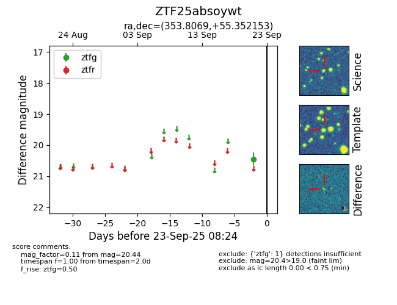

FINK: ZTF25absoywt
Lasair: ZTF25absoywt
ALeRCE: ZTF25absoywt
ZTF25absoywt (ztf,fink)
equatorial (ra, dec) = (353.8069,+55.35215)
galactic (l, b) = (112.1784,-5.92042)

last ztfg=20.44
1 ztfg detections